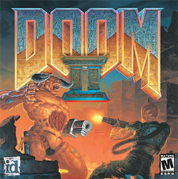

DOOM II: Hell on Earth |
||
|  | ||
The Fight Comes to Earth |
||
Doom II was not dramatically different from its predecessor. There were no major technological developments, graphical improvements, or substantial gameplay changes. Instead, the development team took advantage of advances in computer hardware since the release of the original game that allowed them to do more with their game engine by making much larger and more intricate levels. The game still consisted of the player navigating large non-linear levels. Each level is infested with demons that can be killed with a variety of weapons that can be picked up throughout the game. Levels are completed by finding an exit, whether it be a door, elevator etc., the goal is still simply to advance to the next area. As with its predecessor, Doom II's levels can be completed in a straightforward fashion. However, because the levels are non-linear players can wander off the beaten path, and those that do are often rewarded with bonuses, like health pickups and more powerful weapons. Due to the larger and more complicated maps with larger groups of monsters, the game had somewhat higher system requirements than the original. Rather than the player playing through three related episodes as in the first Doom, gameplay takes place over one giant episode, albeit with interludes for when the story develops. Instead of watching the player's progress on a map (as in the original episodes of Doom), the screens between each level simply show a background (as in the bonus fourth episode of Doom available in The Ultimate Doom expansion pack). This also means the player is never forced to lose all of his or her inventory after completing an episode. Doom II doubled the number of non-boss monster types and started using bosses from the original Doom as normal level enemies, in addition to adding a new weapon, the double-barreled shotgun (called the Super Shotgun in the game), and a new power-up, the Megasphere. |
||